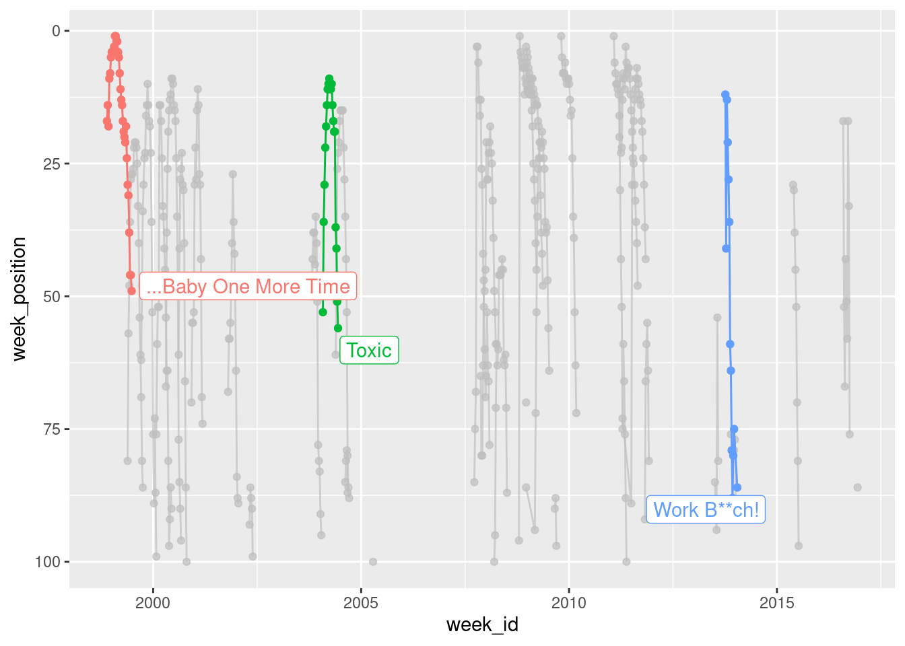
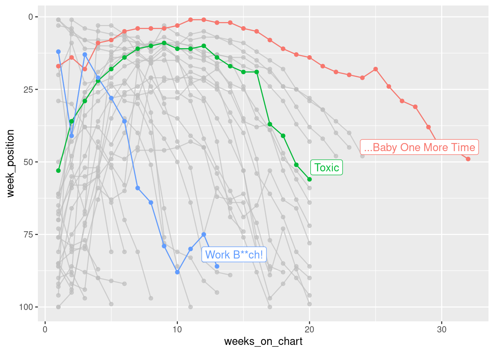
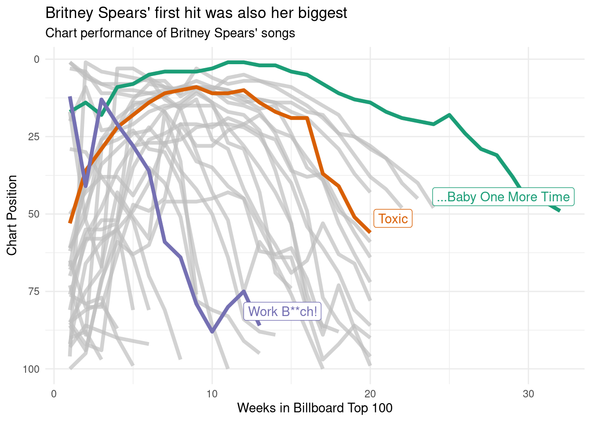

![]()
site <- "https://raw.githubusercontent.com"
user <- "rfordatascience"
repo <- "tidytuesday"
branch <- "master"
folder1 <- "data"
folder2 <- "2021"
folder3 <- "2021-09-14"
file <- "billboard.csv"I’ve never participated in Tidy Tuesday before, but because I’ve now joined a slack that does, it is high time I did something about that poor track record. I wasn’t sure what I wanted to do with this week’s “Billboard” data, other than I wanted it to have something to do with Britney Spears (because she’s awesome). After going back and forward for a while, I decided what I’d do is put together a couple of plots showing the chart performance of all her songs and – more importantly – write it up as a blog post in which I try to “over-explain” all my choices. There are a lot of people in our slack who haven’t used R very much, and I want to “unpack” some of the bits and pieces that are involved. This post is pitched at beginners who are hoping for a little bit of extra scaffolding to explain some of the processes…
There’s an R script containing the source code for this analysis here
Finding the data on GitHub
Every week the Tidy Tuesday data are posted online, and the first step in participating is generally to import the data. After a little bit of hunting online, you might discover that the link to the billboard data looks like this:
https://raw.githubusercontent.com/rfordatascience/tidytuesday/master/data/2021/2021-09-14/billboard.csv
Let’s start by unpacking this link. There is a lot of assumed knowledge buried here, and while it is entirely possible for you to get started without understanding it all, for most of us in the slack group the goal is to learn new data science skills. At some point you are probably going to want to learn the “version control” magic. This post is not the place to learn this sorcery, but I am going to start foreshadowing some important concepts because they will be useful later.
GitHub repositories
The place to start in understanding this link is the peculiar bit at the beginning: what is this “github” nonsense? The long answer is very long, but the short answer is that https://github.com is a website that programmers use to store their code. GitHub is one of several sites (e.g., https://gitlab.org, https://bitbucket.com) that are all built on top of a version control system called “git”. Git is a powerful tool that lets you collaborate with other people when writing code, allows you to keep track of the history of your code, and to backup your code online in case your laptop mysteriously catches on fire.
In the R community, “laptop fires” are universally understood to be a reference to what happens to you when you foolishly ignore the wise advice of Jenny Bryan
Git is a complicated tool and it takes quite some time to get the hang of (I’m still learning, quite frankly), but it is worth your effort. When you have time, I recommend starting a free GitHub account. You can sign up using an email address, and if you have a university email address you get the educational discount (basically you get the “pro” version for free). My username on GitHub is djnavarro, and you can find my profile page here:
https://github.com/djnavarro
The Tidy Tuesday project originated in the “R for data science” learning community, and there is a profile page for that community too:
https://github.com/rfordatascience
R for data science is a wonderful book by Hadley Wickham and Garrett Grolemund
Okay, so that’s part of the link explained. The next thing to understand is that when you create projects using git and post them to GitHub, they are organised in a “repository” (“repo” for short). Each repo has its own page. The Tidy Tuesday repo is here:
https://github.com/rfordatascience/tidytuesday
If you click on this link, you’ll find that there’s a nice description of the whole project, links to data sets, and a whole lot of other things besides.
Most of the work organising this is done by Thomas Mock, and it’s very very cool.
Repositories have branches
Whenever someone creates a git repository, it will automatically have at least one “branch” (usually called “master” or “main”). The idea behind it is really sensible: suppose you’re working on a project and you think “ooooh, I have a cool idea I want to try but maybe it won’t work”. What you can do is create a new “branch” and try out all your new ideas in the new branch all without ever affecting the master branch. It’s a safe way to explore: if your new idea works you can “merge” the changes into the master branch, but if it fails you can switch back to the master branch and pick up where you left off. No harm done. If you have lots of branches, you effectively have a “tree”, and it’s a suuuuuuper handy feature. Later on as you develop your data science skills you’ll learn how to do this yourself, but for now this is enough information. The key thing is that what you’re looking at when you visit the Tidy Tuesday page on GitHub is actually the master branch on the tree:
https://github.com/rfordatascience/tidytuesday/tree/master
Repositories are usually organised
The Tidy Tuesday repository has a lot of different content, and it’s all nicely organised into folders (no different to the folders you’d have on your own computer). One of the folders is called “data”, and inside the “data” folder there is a “2021” folder:
https://github.com/rfordatascience/tidytuesday/tree/master/data/2021
Inside that folder you find lots more folders, one for every week this year. If you scroll down to the current week and click on the link, it will take you here:
https://github.com/rfordatascience/tidytuesday/tree/master/data/2021/2021-09-14
Being the kind soul that he is, Thomas has included a “readme” file in this folder: it’s a plain markdown file that gets displayed in a nice human readable format on the github page. Whenever you’re doing a Tidy Tuesday analysis, it’s super helpful to look at the readme file, because it will provide you a lot of the context you need to understand the data. Whenever doing your own projects, I’d strongly recommend creating readme files yourself: they’re reeeeaaaaaally helpful to anyone using your work, even if that’s just you several months later after you’ve forgotten what you were doing. Over and over again when I pick up an old project I curse the me-from-six-months ago when she was lazy and didn’t write one, or feel deeply grateful to her for taking the time to write one.
Readme files are your best friend. Seriously
In any case, one of the things you’ll see on that page is a link to the “billboard.csv” data. If you click on that link it will take you here:
https://github.com/rfordatascience/tidytuesday/blob/master/data/2021/2021-09-14/billboard.csv
Notice that this doesn’t take you to the data file itself: it goes to a webpage! Specifically, it takes you to the “blob” link that displays some information about the file (notice the “blob” that has sneakily inserted itself into the link above?). In this case, the page won’t show you very much information at all because the csv file is 43.7MB in size and GitHub doesn’t try to display files that big! However, what it does give you is a link that tells you where they’ve hidden the raw file! If you click on it (which I don’t recommend), it will take you to the “raw” file located at…
https://raw.githubusercontent.com/rfordatascience/tidytuesday/master/data/2021/2021-09-14/billboard.csv
This is the link that you might have discovered if you’d been googling to find the Billboard data. It’s a GitHub link, but GitHub uses the “raw.githubusercontent.com” site as the mechanism for making raw files accessible, which is why that part of the link has changed.
I didn’t intend for this section to be this long, honest
The anatomy of the data link
All of this tedious exposition should (I hope) help you make sense of what you’re actually looking at when you see this link. In real life I would never bother to do this, but if you wanted to you could decompose the link into its parts. In the snippet below I’ll create separate variables in R, one for each component of the link:
Argh. Wait. There’s something slightly off-topic that I should point out… one thing you might be wondering when you look at this snippet, is where that pretty “arrow” character comes from. Don’t be fooled. It’s not a special arrow character, it’s two ordinary characters. What I’ve actually typed is <-, but this blog uses a fancypants font that contains a special ligature that makes <- appear to be a single smooth arrow. The font is called “Fira Code”, and a lot of programmers use it on their blogs. Once you know the trick, it’s really nice because it does make the code a little easier to read, but it can be confusing if you’re completely new to programming! It’s one of those little things that people forget to tell you about :-)
Anyway, getting back on topic. The URL (a.k.a. “link”) for the Billboard data is what you get when you paste() all these components together, separated by the “/” character:
data_url <- paste(
site,
user,
repo,
branch,
folder1,
folder2,
folder3,
file,
sep = "/"
)
data_url[1] "https://raw.githubusercontent.com/rfordatascience/tidytuesday/master/data/2021/2021-09-14/billboard.csv"Exciting stuff.
Attaching packages
I’m relatively certain that everyone in the slack has been exposed to the idea of an “R package”. A package is a collection of R functions and data sets that don’t automatically come bundled with R, but are freely available online. The tidyverse, for example, is a collection of R packages that a lot people find helpful for data analysis, and you can install all of them onto your machine (or your RStudio Cloud project) by using this command:
install.packages("tidyverse")This can take quite a while to complete because there are a lot of packages that make up the tidyverse! Once the process is completed, you will now be able to use the tidyverse tools. However, it’s important to recognise that just because you’ve “installed” the packages, it doesn’t mean R will automatically use them. You have to be explicit. There are three tidyverse packages that I’m going to use a lot in this post (dplyr, stringr, and ggplot2), so I’ll use the library() function to “attach” the packages (i.e. tell R to make them available):
library(dplyr)
library(stringr)
library(ggplot2)Importing the data
At this point we know where the data set is located, and we have some R tools that we can use to play around with it. The next step is reading the data into R. The readr package is part of the tidyverse, and it contains a useful function called read_csv() that can go online for you, retrive the billboard data, and load it into R. That’s cool and all but if you look at the library() commands above, I didn’t actually attach them. I didn’t want to do this because honestly I’m only going to use the readr package once, and it feels a bit silly to attach the whole package. Instead, what I’ll do is use the “double colon” notation :: to refer to the function more directly. When I write readr::read_csv() in R, what I’m doing is telling R to use the read_csv() function inside the readr package. As long as I have readr on my computer, this will work even if I haven’t attached it using library(). The technical name for this is “namespacing”, and if you hang around enough R programmers long enough that’s a word that will pop up from time to time. The way to think about it is that every package (e.g., readr) contains a collection of things, each of which has a name (e.g., “read_csv” is the name of the read_csv() function). So you can think of a “space” of these names… and hence the boring term “namespace”.
Okay, let’s use a “namespaced” command to import the data, and assign it to a variable (i.e., give the data a name). I’ll call the data billboard:
billboard <- readr::read_csv(data_url)Rows: 327895 Columns: 10
── Column specification ────────────────────────────────────────────────────────
Delimiter: ","
chr (5): url, week_id, song, performer, song_id
dbl (5): week_position, instance, previous_week_position, peak_position, wee...
ℹ Use `spec()` to retrieve the full column specification for this data.
ℹ Specify the column types or set `show_col_types = FALSE` to quiet this message.The billboard data is a nice, rectangular data set. Every row refers to a specific song on a specific date, and tells you its position in the charts on that date. We can type print(billboard) to take a look at the first few rows and columns. In most situations (not all), you can print something out just by typing its name:
billboard# A tibble: 327,895 × 10
url week_id week_position song performer song_id instance
<chr> <chr> <dbl> <chr> <chr> <chr> <dbl>
1 http://www.billboard.… 7/17/1… 34 Don'… Patty Du… Don't … 1
2 http://www.billboard.… 7/24/1… 22 Don'… Patty Du… Don't … 1
3 http://www.billboard.… 7/31/1… 14 Don'… Patty Du… Don't … 1
4 http://www.billboard.… 8/7/19… 10 Don'… Patty Du… Don't … 1
5 http://www.billboard.… 8/14/1… 8 Don'… Patty Du… Don't … 1
6 http://www.billboard.… 8/21/1… 8 Don'… Patty Du… Don't … 1
7 http://www.billboard.… 8/28/1… 14 Don'… Patty Du… Don't … 1
8 http://www.billboard.… 9/4/19… 36 Don'… Patty Du… Don't … 1
9 http://www.billboard.… 4/19/1… 97 Don'… Teddy Pe… Don't … 1
10 http://www.billboard.… 4/26/1… 90 Don'… Teddy Pe… Don't … 1
# ℹ 327,885 more rows
# ℹ 3 more variables: previous_week_position <dbl>, peak_position <dbl>,
# weeks_on_chart <dbl>Finally, some data!
This view helps you see the data in its “native” orientation: each column is a variable, each row is an observation. It’s a bit frustrating though because a lot of the columns get chopped off in the printout. It’s often more useful to use dplyr::glimpse() to take a peek. When “glimpsing” the data, R rotates the data on its side and shows you a list of all the variables, along with the first few entries for that variable:
glimpse(billboard)Rows: 327,895
Columns: 10
$ url <chr> "http://www.billboard.com/charts/hot-100/1965-0…
$ week_id <chr> "7/17/1965", "7/24/1965", "7/31/1965", "8/7/196…
$ week_position <dbl> 34, 22, 14, 10, 8, 8, 14, 36, 97, 90, 97, 97, 9…
$ song <chr> "Don't Just Stand There", "Don't Just Stand The…
$ performer <chr> "Patty Duke", "Patty Duke", "Patty Duke", "Patt…
$ song_id <chr> "Don't Just Stand TherePatty Duke", "Don't Just…
$ instance <dbl> 1, 1, 1, 1, 1, 1, 1, 1, 1, 1, 1, 1, 1, 1, 1, 1,…
$ previous_week_position <dbl> 45, 34, 22, 14, 10, 8, 8, 14, NA, 97, 90, 97, 9…
$ peak_position <dbl> 34, 22, 14, 10, 8, 8, 8, 8, 97, 90, 90, 90, 90,…
$ weeks_on_chart <dbl> 4, 5, 6, 7, 8, 9, 10, 11, 1, 2, 3, 4, 5, 6, 1, …Notice that this time I just typed glimpse rather than dplyr::glimpse. I didn’t need to tell R to look in the dplyr namespace because I’d already attached it when I typed library(dplyr) earlier.
Finding Britney
Time to start analysing the data. I have made a decision that today I have love in my heart only for Britney. So what I want to do is find the rows in billboard that correspond to Britney Spears songs. The natural way to do this would be to pull out the “performer” column and then try to find entries that refer to Britney. The slightly tricky aspect to this is that Britney doesn’t appear solely as “Britney Spears”. For example, “Me Against The Music” features Madonna, and the entry in the performer column is “Britney Spears Featuring Madonna”. So we’re going to have to search in a slightly smarter way. Before turning this into R code, I can sketch out my plan like this:
get the billboard data, THEN
pull out the performer column, THEN
search for britney, THEN
tidy up a bitThis kind of workflow is naturally suited to the “pipe”, which is written %>%. You’ll see referred to either as the “magrittr pipe” (referring to the magrittr package where it originally came from) or the “dplyr pipe” (because dplyr made it famous!). I’m sure you’ve seen it before, but since one goal of this post is to be a refresher, I’ll explain it again. The pipe does the same job as the word “THEN” in the pseudo-code I wrote above. Its job is to take the output of one function (whatever is on the left) and then pass it on as the input to the next one (on the right). So here’s that plan re-written in an “R-like” format:
the_billboard_data %>%
pull_out_the_performer_column() %>%
search_for_britney() %>%
tidy_it_up()In fact that’s pretty close to what the actual R code is going to look like! The dplyr package has a function dplyr::pull() that will extract a column from the data set (e.g., all 327,895 listings in the performer column), and base R has a function called unique() that will ignore repeat entries, showing you only the unique elements of a column. So our code is going to look almost exactly like this
billboard %>%
pull(performer) %>%
search_for_britney() %>%
unique()Pattern matching for text data
Inexcusably, however, R does not come with a search_for_britney() function, so we’re going to have to do it manually. This is where the stringr package is very helpful. It contains a lot of functions that are very helpful in searching for text and manipulating text. The actual function I’m going to use here is stringr::str_subset() which will return the subset of values that “match” a particular pattern. Here’s a very simple example, where the “pattern” is just the letter “a”. I’ll quickly define a variable animals containing the names of a few different animals:
animals <- c("cat", "dog", "rat", "ant", "bug")To retain only those strings that contain the letter "a" we do this:
str_subset(string = animals, pattern = "a")[1] "cat" "rat" "ant"Alternatively we could write this using the pipe:
animals %>%
str_subset(pattern = "a")[1] "cat" "rat" "ant"I’m not sure this second version is any nicer than the first version, but it can be helpful to see the two versions side by side in order to remind yourself of what the pipe actually does!
We can use the same tool to find all the Britney songs. In real life, whenever you’re working with text data you need to be wary of the possibility of mispellings and other errors in the raw data. Wild caught data are often very messy, but thankfully for us the Tidy Tuesday data sets tend to be a little kinder. With that in mind can safely assume that any song by Britney Spears will include the pattern “Britney” in it somewhere.
So let’s do just try this and see what we get:
billboard %>%
pull(performer) %>%
str_subset("Britney") %>%
unique()[1] "Britney Spears"
[2] "Rihanna Featuring Britney Spears"
[3] "will.i.am & Britney Spears"
[4] "Britney Spears & Iggy Azalea"
[5] "Britney Spears Featuring G-Eazy"
[6] "Britney Spears Featuring Madonna"
[7] "Britney Spears Featuring Tinashe"
[8] "Britney Spears Featuring Nicki Minaj & Ke$ha"At this point I was sorely tempted to get distracted by Ke$ha and Rihanna, but somehow managed to stay on topic. Somehow
Okay, so it turns out that Britney is listed in eight different ways. For the sake of this post, I’m happy to include cases where another artist features on a Britney track, but I don’t want to include the two cases where Britney is the featuring artist. Looking at the output above, it seems like I can find those cases by keeping only those rows that start with the word “Britney”.
Now our question becomes “how do we write down a pattern like that?” and the answer usually involves crying for a bit because the solution is to use a regular expression, or “regex”.
Regular expressions are a tool used a lot in programming: they provide a compact way to represent patterns in text. They’re very flexible, but can often be quite hard to wrap your head around because there are a lot of special characters that have particular meanings. Thankfully, for our purposes today we only need to know one of them: the ^ character is used to mean “the start of the string”. So when interpreted as a regular expression, "^Britney" translates to “any string that begins with ‘Britney’”. Now that we have our regular expression, this works nicely:
billboard %>%
pull(performer) %>%
str_subset("^Britney") %>%
unique()[1] "Britney Spears"
[2] "Britney Spears & Iggy Azalea"
[3] "Britney Spears Featuring G-Eazy"
[4] "Britney Spears Featuring Madonna"
[5] "Britney Spears Featuring Tinashe"
[6] "Britney Spears Featuring Nicki Minaj & Ke$ha"Regular expressions are one of those things you’ll slowly pick up as you go along, and although they can be a huuuuuuge headache to learn, the reward is worth the effort.
In my mental list of “stuff I hatelove in data science”, git and regexes are tied for first place
Creating the Britney data
Okay so now we’re in a position to filter the billboard data, keeping only the rows that correspond to Britney songs. Most people in our slack group have taken an introductory class before, so you’ll be expecting that dplyr::filter() is the tool we need. The kind of filtering you’ve seen before looks like this:
britney <- billboard %>%
filter(performer == "Britney Spears")However, this doesn’t work the way we want. The bit of code that reads performer == "Britney Spears" is a logical expression (i.e., a code snippet that only returns TRUE and FALSE values) that will only detect exact matches. It’s too literal for our purposes. We can’t use the == operator to detect our regular expression either: that will only detect cases where the performer is literally listed as “^Britney”. What we actually want is something that works like the == test, but uses a regular expression to determine if it’s a match or not.
That’s where the str_detect() function from the stringr package is really handy. Instead of using performer == "Britney Spears" to detect exact matches, we’ll use str_detect(performer, "^Britney") to match using the regular expression:
britney <- billboard %>%
filter(str_detect(performer, "^Britney"))A confession. I didn’t technically need to use a regex here, because stringr has a handy str_starts() function. But half the point of our slack group is to accidentally-on-purpose reveal new tools and also I forgot that str_starts() exists so… regex it is
This version works the way we want it to, but it’s usually a good idea in practice to check that we haven’t made any mistakes. Perhaps I have forgotten what str_detect() actually does or I’ve made an error in my use of filter(), for example. So let’s take a look at the performer column in the britney data and check that it contains the same six unique strings:
britney %>%
pull(performer) %>%
unique()[1] "Britney Spears"
[2] "Britney Spears & Iggy Azalea"
[3] "Britney Spears Featuring G-Eazy"
[4] "Britney Spears Featuring Madonna"
[5] "Britney Spears Featuring Tinashe"
[6] "Britney Spears Featuring Nicki Minaj & Ke$ha"That’s reassuring. So let’s take a quick peek at the results of our data wrangling:
glimpse(britney)Rows: 468
Columns: 10
$ url <chr> "http://www.billboard.com/charts/hot-100/2000-0…
$ week_id <chr> "4/22/2000", "10/24/2009", "12/20/2008", "12/2/…
$ week_position <dbl> 67, 1, 3, 70, 70, 21, 17, 29, 76, 1, 26, 62, 65…
$ song <chr> "Oops!...I Did It Again", "3", "Circus", "Stron…
$ performer <chr> "Britney Spears", "Britney Spears", "Britney Sp…
$ song_id <chr> "Oops!...I Did It AgainBritney Spears", "3Britn…
$ instance <dbl> 1, 1, 1, 1, 1, 1, 1, 1, 1, 1, 1, 1, 1, 1, 1, 1,…
$ previous_week_position <dbl> NA, NA, NA, NA, NA, 45, NA, NA, NA, NA, 27, NA,…
$ peak_position <dbl> 67, 1, 3, 70, 70, 21, 17, 29, 76, 1, 26, 62, 65…
$ weeks_on_chart <dbl> 1, 1, 1, 1, 1, 8, 1, 1, 1, 1, 8, 1, 1, 1, 1, 1,…That looks good to me…
Fixing the dates
…or does it? Looking at the week_id column is enough to make any data analyst sigh in mild irritation. This column encodes the date, but the first two entries are "4/22/2000" and "10/24/2009". They are encoded in a “month/day/year” format. Nobody on this planet except Americans writes dates this way. Most countries use “day/month/year” as their standard way of writing dates, and most programming style guides strongly recommend “year/month/day” (there are good reasons for this, mostly to do with sorting chronologically). Worse yet, it’s just a character string. R doesn’t know that this column corresponds to a date, and unlike Excel it is smart enough not to try. Trying to guess what is and is not a date is notoriously difficult, so R makes that your job as the data analyst. Thankfully, the lubridate package exists to make it a little bit easier. In this case, where we have data in month/day/year format, the lubridate::mdy() function will do the conversion for us. You’ll be completely unsurprised to learn that there are lubridate::dmy() and lubridate::ymd() functions that handle other kinds of date formats.
So let’s do this. I’ll use the dplyr::mutate() function to modify the britney data, like so:
britney <- britney %>%
mutate(week_id = lubridate::mdy(week_id))
glimpse(britney)Rows: 468
Columns: 10
$ url <chr> "http://www.billboard.com/charts/hot-100/2000-0…
$ week_id <date> 2000-04-22, 2009-10-24, 2008-12-20, 2000-12-02…
$ week_position <dbl> 67, 1, 3, 70, 70, 21, 17, 29, 76, 1, 26, 62, 65…
$ song <chr> "Oops!...I Did It Again", "3", "Circus", "Stron…
$ performer <chr> "Britney Spears", "Britney Spears", "Britney Sp…
$ song_id <chr> "Oops!...I Did It AgainBritney Spears", "3Britn…
$ instance <dbl> 1, 1, 1, 1, 1, 1, 1, 1, 1, 1, 1, 1, 1, 1, 1, 1,…
$ previous_week_position <dbl> NA, NA, NA, NA, NA, 45, NA, NA, NA, NA, 27, NA,…
$ peak_position <dbl> 67, 1, 3, 70, 70, 21, 17, 29, 76, 1, 26, 62, 65…
$ weeks_on_chart <dbl> 1, 1, 1, 1, 1, 8, 1, 1, 1, 1, 8, 1, 1, 1, 1, 1,…Much better!
Visualising a queen
I’m now at the point that I have a britney data set I can visualise. However, being the queen she is, Britney has quite a few songs that appear in the Billboard Top 100, so the first thing I’ll do is specify a few favourites that we’ll highlight in the plots:
highlights <- c("Work B**ch!", "...Baby One More Time", "Toxic")Most people in our slack will probably have encountered the ggplot2 package before, and at least have some experience in creating data visualisations using it. So we might write some code like this, which draws a plot showing the date on the horizontal axis (the mapping x = week_id) and the position of the song on the vertical axis (represented by the mapping y = week_position). We’ll also map the colour to the song by setting colour = song. Then we’ll add some points and lines:
ggplot(
data = britney,
mapping = aes(
x = week_id,
y = week_position,
colour = song
)
) +
geom_line(show.legend = FALSE) +
geom_point(show.legend = FALSE)The reason I’ve included show.legend = FALSE here is that there are quite a few different songs in the data, and if they were all added to a legend it wouldn’t leave any room for the data!
We can improve on this in a couple of ways. First up, let’s use scale_y_reverse() to flip the y-axis. That way, a top ranked song appears at the top, and a 100th ranked song appears at the bottom:
britney %>%
ggplot(aes(
x = week_id,
y = week_position,
colour = song
)) +
geom_line(show.legend = FALSE) +
geom_point(show.legend = FALSE) +
scale_y_reverse()Notice that I’ve switched to using the pipe here. I take the britney data, pipe it with %>% to the ggplot() function where I set up the mapping, and then add things to the plot with +. It’s a matter of personal style though. Other people write their code differently!
Okay, it’s time to do something about the lack of labels. My real interest here is in the three songs I listed in the highlights so I’m going to use the gghighlight package, like this:
britney %>%
ggplot(aes(
x = week_id,
y = week_position,
colour = song
)) +
geom_line() +
geom_point() +
scale_y_reverse() +
gghighlight::gghighlight(song %in% highlights)Warning: Tried to calculate with group_by(), but the calculation failed.
Falling back to ungrouped filter operation...
Tried to calculate with group_by(), but the calculation failed.
Falling back to ungrouped filter operation...label_key: song
When the data are plotted like this, you get a strong sense of the chronology of Britney’s career, but the downside is that you can’t easily see how the chart performance of “…Baby One More Time” compares to the performance of “Toxic” and “Work B**ch!“. To give a better sense of that, it’s better to plot weeks_on_chart on the horizontal axis:
britney %>%
ggplot(aes(
x = weeks_on_chart,
y = week_position,
group = song,
colour = song
)) +
geom_line() +
geom_point() +
scale_y_reverse() +
gghighlight::gghighlight(song %in% highlights)Warning: Tried to calculate with group_by(), but the calculation failed.
Falling back to ungrouped filter operation...
Tried to calculate with group_by(), but the calculation failed.
Falling back to ungrouped filter operation...label_key: song
Shown this way, you get a really strong sense of just how much of an impact “…Baby One More Time” had. It wasn’t just Britney’s first hit, it was also her biggest. It’s quite an outlier on the chart!
If we’re doing exploratory data analysis, and the only goal is to have a picture to show a colleague, that’s good enough. However, if we wanted to share it more widely, you’d probably want to spend a little more time fiddling with the details, adding text, colour and other things that actually matter a lot in real life!
britney %>%
ggplot(aes(
x = weeks_on_chart,
y = week_position,
group = song,
colour = song
)) +
geom_line(size = 1.5) +
scale_y_reverse() +
scale_color_brewer(palette = "Dark2") +
gghighlight::gghighlight(song %in% highlights,
unhighlighted_params = list(size = .5)) +
theme_minimal() +
labs(
title = "Britney Spears' first hit was also her biggest",
subtitle = "Chart performance of Britney Spears' songs",
x = "Weeks in Billboard Top 100",
y = "Chart Position"
)Warning: Using `size` aesthetic for lines was deprecated in ggplot2 3.4.0.
ℹ Please use `linewidth` instead.Warning: Tried to calculate with group_by(), but the calculation failed.
Falling back to ungrouped filter operation...label_key: song
If I were less lazy I would also make sure that the chart includes a reference to the original data source, and something that credits myself as the creator of the plot. That’s generally good etiquette if you’re planning on sharing the image on the interwebs. There’s quite a lot you could do to tinker with the plot to get it to publication quality, but this is good enough for my goals today!

{kind=link}
Reuse
Citation
BibTeX citation:
@online{navarro2021,
author = {Navarro, Danielle},
title = {Visualising the Hits of {Queen} {Britney}},
date = {2021-09-14},
url = {https://blog.djnavarro.net/tidy-tuesday-billboard},
langid = {en}
}
For attribution, please cite this work as: